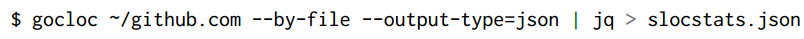
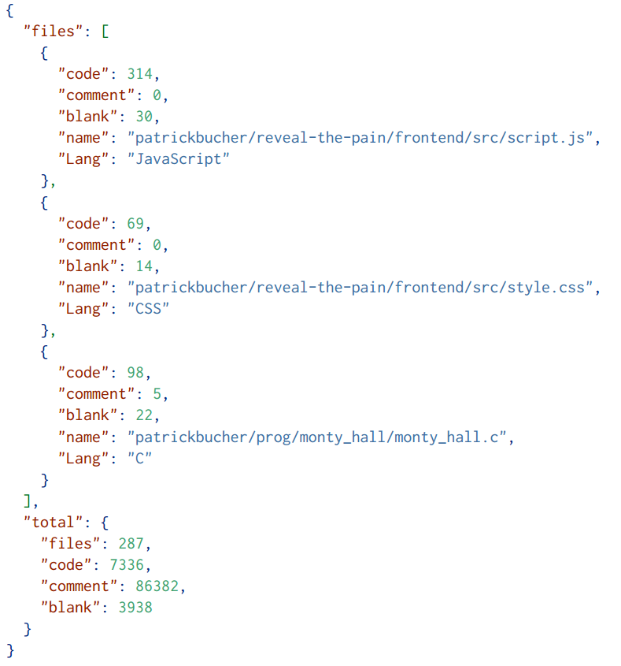

gocloc
The gocloc utility comes with some command line flags that are very useful for the problem at hand:
- --by-file: report results for every encountered source fle
- --output-type=json: output the report as a JSON data structure
Piped into jq, a JSON fle called sclocstats.json (short for «source lines of code statistics» for a source folder is created within seconds:
The (shortened) data structure looks as follows (slocstats.json) for example:
